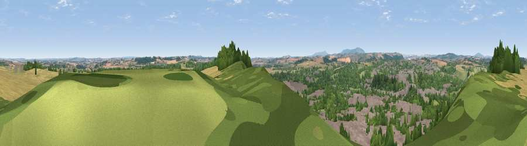

Viewpoint near Bridgnorth
#14884 in England · top 32% of its area beats it · near BridgnorthWhere it is
The exact computed spot (SO 72875 92975). Click the marker for map links.
The view, rendered

A 360° render of this exact spot computed from the terrain model, tree cover and land cover — summer colours, afternoon light, calibrated against photographs of famous viewpoints. Real trees, hedges and buildings will differ in detail.
The panorama
Grey silhouette: terrain skyline in each direction (720 bearings, Earth curvature and refraction included). Dashed green: skyline with trees (+15 m) and buildings (+8 m) as obstacles. Blue strip: how far the ground is visible on each bearing.
Where the view opens
Wedge length = distance to the farthest visible ground on that bearing (vegetation-aware). Rings at 10, 25 and 50 km.
What fills the view
31% woodland · 26% cropland · 25% built-up · 17% grassland
Angular shares of the visible panorama (visual magnitude), not map area. Landscape diversity 0.60 (0–1 Shannon).
Key numbers
More beautiful places nearby
The staircase of upgrades: each row has a higher view potential than everything closer. Driving times are estimates from straight-line distance, calibrated against real road routing — check an actual route before setting out.
| Place | Direction | Drive | Score |
|---|---|---|---|
| Viewpoint near Quatford | SE · 2 km | ~6 min | 57.9 |
| Viewpoint near Claverley | E · 4 km | ~9 min | 60.0 |
| Apley Terrace | N · 5 km | ~11 min | 65.1 |
| Viewpoint near Enville | SE · 11 km | ~21 min | 65.7 |
| Viewpoint near Enville | SE · 11 km | ~21 min | 73.1 |
| Knowle Hill | SSW · 12 km | ~22 min | 75.5 |
| Viewpoint near Harley | WNW · 14 km | ~26 min | 79.9 |
| Viewpoint near Abdon | WSW · 15 km | ~27 min | 82.6 |
52.53396, -2.40131 · source: screening · position refined by local search. Computed location — check access rights before visiting.